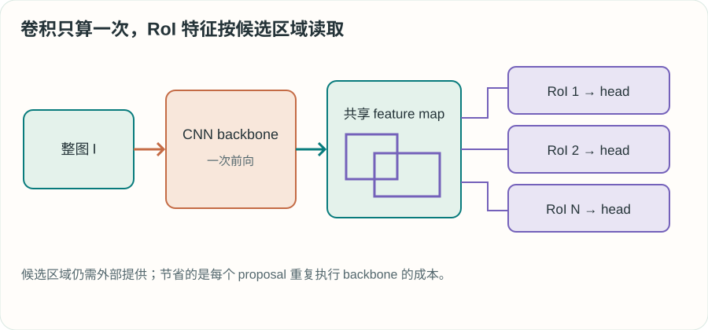
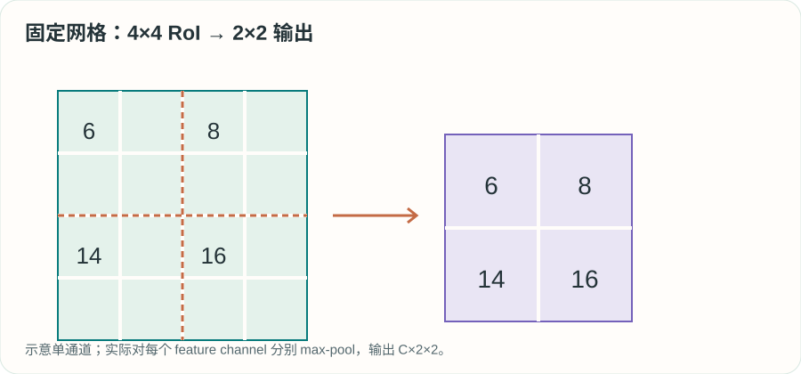
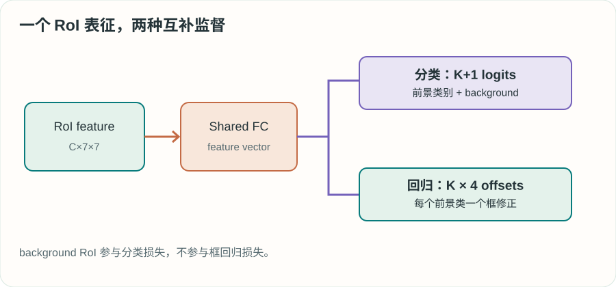
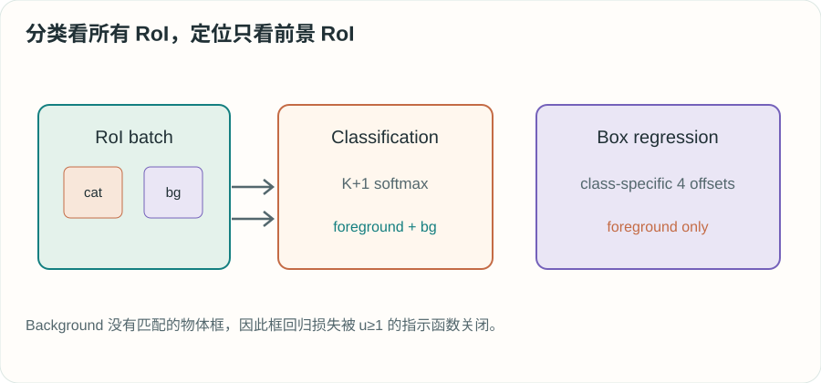

CHAPTER 17 · 目标检测
Fast R-CNN：共享卷积特征与 RoI Pooling
把“每个候选框都跑一次 CNN”改成“整张图只算一次卷积”。Fast R-CNN 通过 RoI Pooling、双分支检测头与多任务损失，让 proposal 共享视觉特征。
Fast R-CNN 改变的不是候选区域，而是特征计算方式
R-CNN 的 CNN 对每个 proposal 分别执行，绝大多数卷积工作其实在重复处理同一张图。Fast R-CNN 的核心改造是：整张输入图像只经过一次卷积主干，产生共享 feature map；每个 RoI（Region of Interest）只在这张特征图上读取对应区域，再被压缩为固定空间尺寸，供后续全连接层处理。
这并没有取消 Selective Search。Fast R-CNN 仍然接收外部 region proposals，只是把昂贵的 CNN 计算从“每个框一次”变成“每张图一次”。因此它解决了 R-CNN 的重复卷积问题，但 proposal generation 仍然是系统瓶颈，后续 Faster R-CNN 才把它替换成可学习的 RPN。

RoI Pooling：任意大小区域如何变成 7×7？
Fast R-CNN 的 RoI Pooling 把任意大小的 feature-map 区域切成固定的 (H×W) 个 bin（典型 VGG16 设置为 7×7）。每个 bin 对每个通道执行 max pooling，输出尺寸因此与 proposal 的原始宽高无关。若输入 feature map 为 (C×H_f×W_f)，一个 RoI 的输出就是 (C×7×7)，接着可被 VGG16 的全连接层消费。

关键细节是离散化。RoI 边界先从图像坐标按 feature stride 映射到 feature map，再量化到整数格点；bin 的边界也需要量化。不同实现对 rounding、clamping 和边界处理有精确约定。量化使 RoI Pooling 高效，但可能造成位置错位。Mask R-CNN 后来提出 RoIAlign，使用双线性插值避免这种粗粒度量化；RoIAlign 不是 Fast R-CNN 原始模块。
每个 RoI 共享一段全连接层，再分成两个任务头
池化后的 RoI 特征经过若干全连接层，分成两个 sibling heads。分类分支输出 (K+1) 类 softmax 概率，其中额外的第 0 类是 background；框回归分支输出每个前景类别各自的 4 个偏移量。分类回答“这是什么”，框回归回答“边界应向哪里移动”。两条分支共享前面的卷积与 RoI 特征，因此分类学到的表征也能被定位任务利用。

与 R-CNN 不同，Fast R-CNN 不再用每类单独训练的线性 SVM 替换 softmax。分类与定位在同一个训练目标中联合优化；对 background RoI，只计算分类损失，不计算框回归损失，因为背景没有对应的真实物体框。
多任务损失：分类对所有 RoI，回归只对前景 RoI
令 (u) 为 RoI 的真实类别（0 表示背景），(p_u) 为 softmax 给真实类别的概率，(t^u) 为预测的类别特定框偏移，(v) 为目标偏移。Fast R-CNN 使用分类 log loss 加上由前景指示函数门控的定位损失。定位项使用 Smooth L1，对小误差采用二次惩罚，对较大误差采用线性惩罚，避免 L2 在异常偏移上产生过大的梯度。
概念化的 Fast R-CNN multi-task loss；论文中分类项为 −log p_u，回归项只在 u≥1 时激活。
真实训练还要处理 proposal 与 ground truth 的匹配、正负 RoI 采样、每类回归目标的组织方式和 loss normalization。论文的 mini-batch 先采样图像，再从每张图采样 RoI，使同一图像的多个区域共享前向与反向卷积计算。

最小实验：整数对齐 RoI Pooling 与前景门控
第一个示例实现一个整数边界、无空间缩放的简化 max-pooling 版本。它只用于验证固定输出尺寸和 bin 内最大值，不声称逐位复现 torchvision 的全部 RoI Pooling rounding 规则。第二个示例验证多任务损失中 background 的框回归梯度为零。
import math
import torch
import torch.nn.functional as F
def roi_pool_integer_aligned(feature, roi, out_h=2, out_w=2):
# feature: [C, H, W]; roi: (x1, y1, x2, y2) in feature coordinates
_, height, width = feature.shape
x1, y1, x2, y2 = roi
roi_w, roi_h = max(x2-x1, 1), max(y2-y1, 1)
rows = []
for iy in range(out_h):
row = []
y0 = max(0, min(math.floor(y1 + iy*roi_h/out_h), height-1))
y1b = max(y0+1, min(math.ceil(y1 + (iy+1)*roi_h/out_h), height))
for ix in range(out_w):
x0 = max(0, min(math.floor(x1 + ix*roi_w/out_w), width-1))
x1b = max(x0+1, min(math.ceil(x1 + (ix+1)*roi_w/out_w), width))
row.append(feature[:, y0:y1b, x0:x1b].amax(dim=(-2,-1)))
rows.append(torch.stack(row, dim=-1))
return torch.stack(rows, dim=-2)
feature = torch.arange(1,17,dtype=torch.float32).reshape(1,4,4)
pooled = roi_pool_integer_aligned(feature, (0,0,4,4), 2, 2)
expected = torch.tensor([[[6.,8.],[14.,16.]]])
assert pooled.shape == (1,2,2)
assert torch.equal(pooled, expected)
print("pooled:", pooled.tolist())import torch
import torch.nn.functional as F
torch.manual_seed(7)
# 3 classes: background, cat, dog; 2 foreground box regressors
class_logits = torch.randn(2,3,requires_grad=True)
box_pred = torch.randn(2,2,4,requires_grad=True)
labels = torch.tensor([1,0]) # RoI 0 is cat; RoI 1 is background
box_target = torch.zeros(2,4)
loss_cls = F.cross_entropy(class_logits, labels)
positive = torch.nonzero(labels > 0).squeeze(1)
class_index = labels[positive] - 1
selected = box_pred[positive, class_index]
loss_box = F.smooth_l1_loss(selected, box_target[positive])
loss = loss_cls + loss_box
loss.backward()
assert torch.isfinite(loss)
assert box_pred.grad[0].abs().sum() > 0
assert torch.equal(box_pred.grad[1], torch.zeros_like(box_pred.grad[1]))
print("classification + foreground-only box loss:", float(loss))Fast R-CNN 的成果、限制与后续改进
Fast R-CNN 让 backbone 卷积在 proposal 间共享，并把分类与框回归合并到一个多任务训练过程；它能端到端更新卷积特征，也不需要像 R-CNN 那样把每个 proposal 的特征全部缓存到磁盘。论文报告的速度和精度比较依赖 VGG16、PASCAL VOC、硬件与 proposal 生成时间是否计入，不能把其中的 FPS 数字当作现代设备的普遍性能。
它仍然依赖 Selective Search。原论文明确指出 proposal generation 在快速检测器中成为瓶颈；Faster R-CNN 的 Region Proposal Network（RPN）就是为了解决这个问题。另一个边界是 RoI Pooling 的坐标量化：对分类可能足够稳健，但对像素级 mask 定位不理想，后来 Mask R-CNN 使用 RoIAlign 处理这一问题。
理解检查：Fast R-CNN 是否已经把候选区域生成也学进网络？
没有。它共享的是 CNN 特征提取；proposal 仍由 Selective Search 等外部方法提供。把 proposal 生成也改为可学习模块，是 Faster R-CNN 的关键一步。
原始论文与技术文档
文中算术与代码示例为教学构造，不是完整 benchmark 复现；历史模型结论仅在对应论文的数据、实现和评估协议下成立。